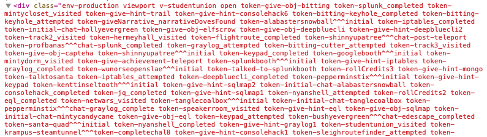
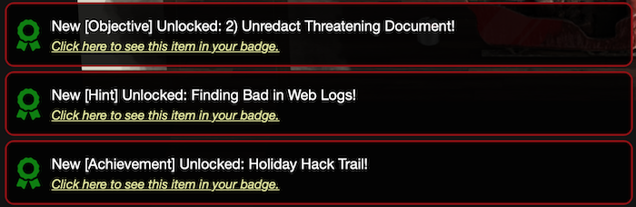

Progress Tokens#

As you progress through the game and solve challenges, additional token classes will be added to the hhc-game-elements div. Tokens can be grouped under different categories like areas visited, hints given, narrative sections given, objectives given, initial chat conversations, completed chat conversations, attempted challenges, completed challeges, booth conversations, end credits, and miscellaneous events like receiving the badge upgrade. The token information is probably what triggers the notifications that pop up as you progress throughout the game.

Below is an overview of all tokens I was able to collect and, while I completed all main objectives and hint challenges, it appears I still might have missed a few of them. For example, even after solving challenge 12, Krampus keeps repeating the same line "But there’s still time! Solve the final challenge in your badge by blocking the bad IPs at srf.elfu.org and save the holiday season!".
This appears to be confirmed by the hhtTotals const in the con.js script. Totals for narrative, objective, and area match up with the number of tokens collected, but hints is off by one. Looks like I might be missing token-give-hint-rita2.
const hhcTotals = {
"hint": 32,
"achievement": 25,
"objective": 13,
"narrative": 10,
"info": 2,
"areas": 20,
"collectibles": 0,
"talks": 15
};
Areas Visited#
- token-trainstation_visited
- token-quad_visited
- token-hermeyhall_visited
- token-netwars_visited
- token-library_visited
- token-speakerroom_visited
- token-dorm_visited
- token-mintydorm_visited
- token-mintycloset_visited
- token-steamtunnels_visited
- token-studentunion_visited
- token-sleighshop_visited
- token-track1_visited
- token-track2_visited
- token-track3_visited
- token-track4_visited
- token-track5_visited
- token-track6_visited
- token-track7_visited
- token-finale_visited
Hints#
- token-give-hint-edBasics
- token-give-hint-bitting1
- token-give-hint-bitting2
- token-give-hint-trail
- token-give-hint-deepbluecli1
- token-give-hint-deepbluecli2
- token-give-hint-iptables
- token-give-hint-mongo
- token-give-hint-keypad
- token-give-hint-sqlmap1
- token-give-hint-sqlmap2
- token-give-hint-eql
- token-give-hint-graylog1
- token-give-hint-graylog2
- token-give-hint-consolehack1
- token-give-hint-consolehack2
- token-give-hint-consolehack3
- token-give-hint-consolehack4
- token-give-hint-consolehack5
- token-give-hint-consolehack6
- token-give-hint-elfscrow1
- token-give-hint-sysmon
- token-give-hint-jq
- token-give-hint-path
- token-give-hint-flightroute1
- token-give-hint-flightroute2
- token-give-hint-powershell
- token-give-hint-capteha1
- token-give-hint-rita1
- token-give-hint-nyanshell1
- token-give-hint-nyanshell2
Narrative#
- token-giveNarrative_MeetSanta
- token-giveNarrative_narrativeCapteha
- token-giveNarrative_narrativeDovesFound
- token-giveNarrative_narrativeTFPlotReveal
- token-giveNarrative_narrativeMeetKrampus
Give Objective#
- token-give-obj-splunk
- token-give-obj-bitting
- token-give-obj-keybitting
- token-give-obj-elfscrow
- token-give-obj-deepbluecli
- token-give-obj-capteha
- token-give-obj-turtledoves
- token-give-obj-flightroute
- token-give-obj-consolehack
- token-give-obj-redactedpdf
- token-give-obj-sqlmap
- token-give-obj-eql
- token-give-obj-rita
Initial#
- token-alabastersnowball^^^initial
- token-shinnyupatree^^^initial
- token-wunorseopenslae^^^initial
- token-pepperminstix^^^initial
- token-kenttinseltooth^^^initial
- token-krampus-steamtunnel^^^initial
- token-santa-lastroom^^^initial
- token-turtledoves^^^initial
- token-sugarplummary^^^initial
- token-mintycandycane^^^initial
- token-santa-quad^^^initial
- token-bushyevergreen^^^initial
- token-profbanas^^^initial
- token-hollyevergreen^^^initial
- token-toothfairy-lastroom^^^initial
- token-krampus-lastroom^^^initial
- token-krampus-sleighroom^^^initial
- token-santa-trainstation^^^initial
- token-tanglecoalbox^^^initial
- token-toothfairy-sleighroom^^^initial
- token-sparkleredberry^^^initial
Attempted#
- token-bitting-cutter_attempted
- token-bitting-keyhole_attempted
- token-iptables_attempted
- token-graylog_attempted
- token-nyanshell_attempted
- token-keypad_attempted
- token-trail_attempted
- token-edescape_attempted
- token-fridosleigh_attempted
- token-jq_attempted
- token-powershell_attempted
- token-path_attempted
- token-mongo_attempted
- token-sleighroutefinder_attempted
Completed#
- token-edescape_completed
- token-path_completed
- token-powershell_completed
- token-keypad_completed
- token-trail_completed
- token-nyanshell_completed
- token-graylog_completed
- token-mongo_completed
- token-iptables_completed
- token-jq_completed
- token-turtledoves_completed
- token-redacted_completed
- token-deepbluecli_completed
- token-eql_completed
- token-rita_completed
- token-splunk_completed
- token-bitting_completed
- token-bitting-keyhole_completed
- token-capteha_completed
- token-sqlmap_completed
- token-elfscrow_completed
- token-consolehack_completed
- token-flightroute_completed
- token-hhc19_completed
Initial Chat#
- token-initial-chat-kenttinseltooth
- token-initial-chat-wunorseopenslae
- token-initial-chat-sparkleredberry
- token-initial-chat-profbanas
- token-initial-chat-santa-trainstation
- token-initial-chat-bushyevergreen
- token-initial-chat-sugarplummary
- token-initial-chat-pepperminstix
- token-initial-chat-santa-quad
- token-initial-chat-tanglecoalbox
- token-initial-chat-mintycandycane
- token-initial-chat-alabastersnowball
- token-initial-chat-hollyevergreen
Chat Complete#
- token-kenttinseltooth^^^chat-iptables_complete
- token-wunorseopenslae^^^chat-jq_complete
- token-sparkleredberry^^^chat-powershell_complete
- token-profbanas^^^chat-splunk_completed
- token-bushyevergreen^^^chat-edescape_completed
- token-sugarplummary^^^chat-path_complete
- token-pepperminstix^^^chat-graylog_complete
- token-tanglecoalbox^^^chat-keypad_completed
- token-mintycandycane^^^chat-trail_complete
- token-alabastersnowball^^^chat-nyanshell_complete
- token-hollyevergreen^^^chat-mongo_complete
- token-shinnyupatree^^^chat-consolehack-completed
Booths Initial#
- token-googlebooth^^^initial
- token-splunkbooth^^^initial
- token-stibooth^^^initial
- token-swagbooth^^^initial
Booths Talked#
- token-talked-to-googlebooth
- token-talked-to-splunkbooth
- token-talked-to-stibooth
- token-talked-to-swagbooth
Credits#
- token-rollCredits1
- token-rollCredits2
- token-rollCredits3
Other#
- token-turtledoves
- token-talktosanta
- token-santa-quad^^^phaseTwo
- token-shinnyupatree^^^chat-post-teleport
- token-give-achievement-teleport
- token-krampus-steamtunnel^^^token-completechal7
- token-krampus-steamtunnel^^^token-completechal8